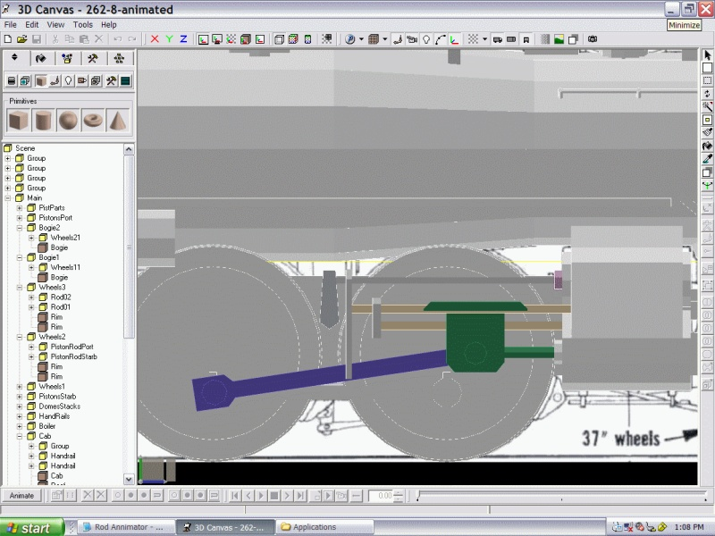

|
|
|
|
Australian MSTS @ steam4me
|
Using the Rod Animator Plug-in in 3D Canvas Pro
by Scott Brunner
Public Domain 2004
PREFACE
This document was created from information I gathered from Paul Gausden's Steam Engine Tutorial and from Paul Gausden in the 3DC forum.This is not meant as a substitute for the Steam Engine Tutorial however while creating my first model I found myself continually referring to the parts regarding animations.
This should be a nice reference if you are trying to create your own model based on the tutorial series.
REFERENCES
- Steam Engine Tutorial by Paul Gausden
- 3D Canvas Plug-In Page by Paul Gausden
3DC SKILLS
- All the basic object creation and manipulation
- Shift center points on an object
3DC PLUG-INS
- 3D Canvas Plug-In Page for Paul Gausden' Engineer Plug-In and Rod Animator Plug-In
PREREQUISITES
- Motion is being created for only two parts contained in the following two groups;
- PISTON ROD - connected to wheel - circular motion around wheel;
- PISTON - connects the PISTON's shaft and PISTON ROD - back and forth motion;
- PISTON ROD Group - must be a child group of wheel it connects to;
- PISTON Group - must be child group of your MAIN group and not part of the WHEEL group;
- PISTON CYLINDER Group - Non-Moving - this is the actual cylinder on a steam locomotive that houses the piston head;
- WHEEL Group - This is the set of wheels that the PISTON ROD connects to;
- ENGINEER Plug-In was used and all motion and is referenced to the starboard (right) side wheels. This also automatically animates all the WHEELS and CONNECTING RODS;
- For simplicity each group will contain only one part: once the motion of the group is correct I found it fairly easy to add additional parts as necessary;
- The "Length" of the PISTON ROD is from the wheel connection point to the piston connection point. This is usually the rod length without bearings attached.
REFERENCE IMAGE

- PISTON ROD is Blue
- PISTON is Green
LET's START
I start with the starboard side:PISTON CYLINDER
- Create the PISTON CYLINDER (Non Moving Part) and place it in proper position;
- Ensure "pivot point" is center of cylinder;
- Move it into your locomotive's MAIN Group.
PISTON ROD
- Create the PISTON ROD and record its length;
- Run SHIFT CENTER (now also an operation) with the aft face of the PISTON ROD selected;
- Drag the PISTON ROD and drop it in the WHEELS group it connects to. It needs to be a child group of the desired WHEELS group;
- The "pivot point" of the PISTON ROD must be the same as the point of attachment on the desired wheel - usually aft end of the PISTON ROD.
PISTON
- Create the PISTON (actually the part that connects the PISTON's shaft to the PISTON ROD). Once complete this group usually contains the piston shaft, some sort of piston guide, and the bearing that connects the piston shaft to the PISTON ROD;
- Move the PISTON into the MAIN Group for your locomotive;
- The "pivot point" of the PISTON must be centered on the PISTON CYLINDER x axis. All other axis changed by Rod Animator Plug-In.
RUNNING ROD ANIMATOR
- At this point you should be able to run the Rod Animator Plug-In:
- First select the starboard wheel that the PISTON ROD is connected to. Again, PISTON ROD needs to be child of this group;
- Now run the Rod Animator Plug-In: you should see the name of your PISTON ROD group displayed in the first field. Select it;
- In the bottom field you need to scroll through you hierarchy to find the PISTON group associated with the PISTON ROD you are trying to animate: select this as well;
- Input the length of the PISTON ROD you recorded earlier. Note the KEY FRAMES set to 16;
- Just hit the START button.
- Your first PISTON ROD and PISTON should now be animated.
REPEAT PROCESS FOR OTHER SIDE
- Copy all the necessary parts and procedures to the port side following the procedures above.
- The only real difference is that you still select the starboard side wheel to animate the port side PISTON ROD and PISTON.
- The pivot points must be centered to the port side of the locomotive as well.
REDO ALL ANIMATIONS TO 16 KEY FRAMES
- The ENGINEER PLUG-IN sets all KEY FRAME animations to 8: we need to change them all to match 16 otherwise it will not work properly. Again the Rod Animator Plug-In does this for you:
- Select the desired WHEELS group that the CONNECTING RODS built by the ENGINEER Plug-In are attached to;
- Run the ROD ANIMATOR Plug-In once again;
- Select the CONNECTING ROD group displayed in the top field: select the "WHEEL ANIMATION" check box: the bottom field should disappear;
- Press the start button and the wheel should be animated;
Repeat for other side. RE-ANIMATING WHEELS THAT DO NOT HAVE RODS ATTACHED
- Just select the starboard wheel. Run the Rod Animation Plug-In, but do not press anything except the OK button;
- The Rod Animator Plug-In will give an error, but it has finished the process correctly.
CLEARING ALL ANIMATIONS ON AN OBJECT
- Clearing: on the animation toolbar at the bottom, there is a button to remove animations for an entire group (next to the remove all animations button!).
FINAL NOTES
- Save Save Save - I like saving a copy of my work prior to animating anything;
- Always do a final check of the animation in MSTS - there is no substitute.
Author:
Scott Brunner (aka scottb13)
Email: scottb613@yahoo.com
30 October 2004
- Return to top of this page
- Other tutorials (complete list)
- Return to the Australian MSTS @ steam4me start page